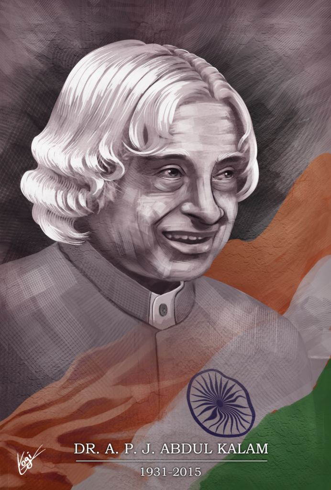

APJ Abdul Kalam
1931-2015
Avul Pakir Jainulabdeen Abdul Kalam was an Indian aerospace scientist and statesman who served as the 11th President of India from 2002 to 2007. He was born and raised in Rameswaram, Tamil Nadu and studied physics and aerospace engineering. He spent the next four decades as a scientist and science administrator. He thus came to be known as the "Missile Man of India" for his work on the development of ballistic missile and launch vehicle technology.